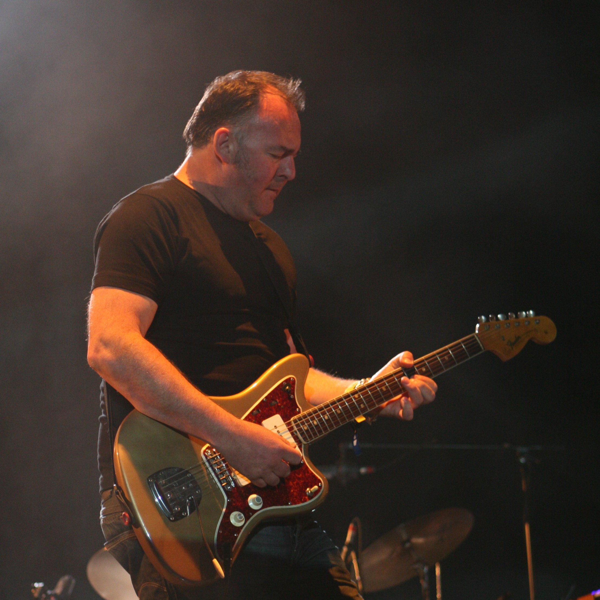

Portishead is an English band formed in 1991 in Bristol. They are often considered as one of the pioneers of trip hop music. The band is named after the nearby town of the same name, eight miles west of Bristol, along the coast.
Portishead consists of Geoff Barrow, Beth Gibbons and Adrian Utley, while sometimes citing a fourth member, Dave McDonald, an engineer of their first records
Their debut album, Dummy, was met with critical acclaim in 1994. Two other studio albums have been issued: Portishead in 1997 and Third in 2008.
About:
Dummy (1994)
Portishead's first album Dummy was released in 1994. The cover features a still from the band's own short film To Kill a Dead Man. The credits indicate that at this juncture, Portishead was a duo of Geoff Barrow
and Beth Gibbons. Adrian Utley, who co-produced the album with them (and who played on nine of the tracks and co-wrote eight), became an official band member shortly after its release. Despite the band's aversion
to press coverage, the album was successful in both Europe and the United States (where it sold more than 150,000 copies even before the band toured there). Dummy was positively described by the Melody Maker
as "musique noire for a movie not yet made". Rolling Stone praised its music as "Gothic hip-hop". Dummy spawned three singles: "Numb", "Sour Times" and "Glory Box", and won the Mercury Music Prize in 1995. The
success of the album saw the band nominated for Best British Newcomer at the 1995 Brit Awards. In 2003, the album was ranked number 419 on Rolling Stone magazine's list of the 500 Greatest Albums of All Time.
The album is often considered one of the greatest trip hop albums to date and is a milestone in the definition of the genre.
Portishead (1997)
After their initial success, Portishead withdrew from the spotlight for three years until their second album, Portishead, was released in 1997. The album's sound differed from Dummy, characterised as "grainy and harsher. Three singles, "All Mine", "Over"
and "Only You" were released, the first one achieving a Top 10 placing in the UK. In 1997, the band performed a one-off show with strings at the Roseland Ballroom in New York City. A live album primarily
featuring these new orchestral arrangements of the group's songs was released in 1998. There was also a long-form VHS video of the performance, and a DVD followed in 2002, with substantial extra material
including many early music videos.
Hiatus (1999–2005)
In 1999, Portishead recorded the song "Motherless Child" with Tom Jones for his album Reload. For the next few years, the band members concentrated on solo and other pursuits. In February 2005, the band appeared live for the first time in seven years
at the Tsunami Benefit Concert in Bristol. Around that time, Barrow revealed that the band was in the process of writing its third album. In August 2006, the band posted two new tracks on its MySpace page
(called "Key Bored 299 03" and "Greek Jam"), described by Barrow as "doodles". Around the same time, Portishead covered Serge Gainsbourg's "Un Jour Comme un Autre (Requiem for Anna)" on the tribute album
Monsieur Gainsbourg Revisited.
Third (2008)
On 2 October 2007, Portishead stated that the new album Third had been mixed and was nearly complete, and was due for release in early April 2008. The release was later pushed to 28 April. On 8 and 9 December 2007, the band curated the All Tomorrow's
Parties festival in Minehead, England. The festival featured their first full live sets in nearly 10 years. They premiered five tracks from the new album: "Silence", "Hunter", "The Rip", "We Carry On", and
"Machine Gun". On 21 January 2008, a European tour to support the album was announced, together with a headline spot at the Coachella Valley Music and Arts Festival on 26 April 2008, their only U.S. date
on the tour. Third was made available on Last.fm the week before release, attracting 327,000 listeners in just under 24 hours. It was the first time Last.fm had made an album available before its official
release date. The album was released on 29 April 2008 to coincide with the band's appearance at Coachella. Portishead's Geoff Barrow realised a "boyhood fantasy" when Chuck D of Public Enemy joined the band
onstage at the "ATP I'll Be Your Mirror" festival curated by Portishead in Asbury Park, NJ in October 2011. He contributed his verse from the P.E. song "Black Steel in the Hour of Chaos" over Portishead's
single "Machine Gun".
Post-Third (2008–present)
On 18 May 2008, Barrow expressed Portishead's enthusiasm for recording new material on their official website's blog, stating that he "can't wait to write some new tunes". On 28 September 2009, Barrow announced "big plans" for a new project with a new
angle, hinting that an album could arrive as soon as late 2010. Whilst the album had yet to materialise, on 9 December 2009, the band released the song "Chase the Tear" for Human Rights Day to raise money
for Amnesty International UK. Additionally, on 3 December 2008, Universal Music Japan reissued the albums Dummy and Portishead in limited edition on SHM-CD. During Summer 2011, Portishead performed at a
number of festivals in Europe, including, Pohoda Festival, Exit Festival, Benicàssim Festival in Spain, Rock Werchter, Paleo Festival, Roskilde Festival, the Hurricane/Southside Festivals in Germany, and
the Super Bock Super Rock music festival. The band also headlined and curated the line-up for two All Tomorrow's Parties music festivals entitled I'll Be Your Mirror, in London at Alexandra Palace on 23
and 24 July. The second took place in Asbury Park, New Jersey from 30 September – 2 October. Portishead then visited several cities in North America, including New York, Montreal, Toronto, Chicago, Mexico
City, Los Angeles, Berkeley, Seattle, Vancouver, and Denver during October. The Chicago Tribune hailed the concert and noted: "horror-movie accents—Gothic organ, guitar lines thick with menacing reverb,
spooky theremin—ensured a certain darkness". They finished their tour with a jaunt to Australia and New Zealand. Barrow stated in a Rolling Stone interview that he would begin work on his portion of the
album in January 2012, jokingly pointing out that it could be another decade before a new album is released. In 2013 the band headlined the Other Stage at the Glastonbury Music festival and embarked on a
European tour. In summer 2014, they played several concerts around Europe. 2015 saw Portishead continue to perform live, playing festivals such as fib (Benicassim, Spain), Latitude (Southwold, Suffolk, UK),
and the Montreux Jazz Festival (Montreux, Switzerland). Additionally, Portishead produced a cover of ABBA's song "SOS" for the soundtrack to the movie High-Rise which had a Gala screening at the London Film
Festival on 9 October 2015. In 2016, the band won an Ivor Novello Award for Outstanding Contribution to British Music. On 22 June 2016, Portishead released an official video for "SOS" that recontextualized
the song in the wake of the then-recent murder of MP Jo Cox and the Brexit vote, taking place the next day; the video ends with Beth Gibbons reaching her hand out towards the viewer and then a quote by Cox
appears: "We have far more in common than which divides us."
Band's members:
Beth Gibbon
singer and lyricist
She was raised on a small farm with two sisters near Exeter city, England
She has cited Nina Simone, Janis Joplin, Edith Piaf, Janis Ian and Elizabeth Fraser, as female musical influences.
Her new album, recorded with the Polish National Radio Symphony Orchestra was released in March 2019. Gibbons had to study Polish language for this performance.
Geoff Barrow
composer, disc jockey, and multi-instrumentalist
Barrow is also a member of the band Beak and hip-hop supergroup Quakers and a film score composer.
"I just wanted to make interesting music, proper songs with a proper life span and a decent place in people's record collections."
-Geoff Barrow about forming Portishead

Adrian Utley
music producer, composer and multi-instrumentalist
He built up a collection of vintage instruments and studio equipment, and moved into production and film work
During his career, Utley has recorded with artists as diverse as Marilyn Manson, Jeff Beck, Torres, Perfume Genius, Alain Bashung and Marianne Faithfull, and his film work includes Sound by Nic Roeg and Spiders
from Mars with David Attenborough.